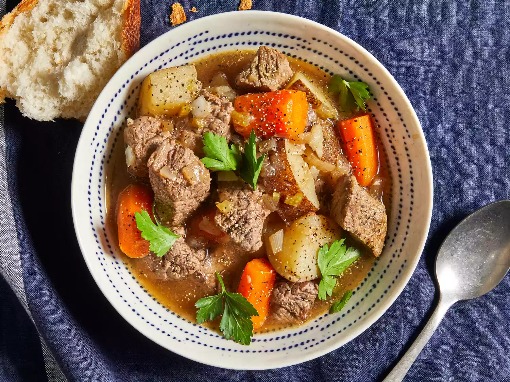

Semur Sapi

Resep semur daging sapi yang dapat dibuat hanya dengan kentang, wortel,
seledri, dan rempah-rempah.
Komposisi
- Daging sapi
- Tepung serbaguna
- Garam
- Kaldu sapi
- Wortel yang sudah dipotong-potong
- Kentang yang sudah dipotong dadu
- Bawang merah
- Bawang putih
- Paprika
- rempah-rempah sesuai selera
Langkah-langkah
- Taruh sapi di panci dan panaskan
-
Campurkan semua rempah-rempah ke dalam panci dan aduk hingga merata ke
seluruh daging
-
Tambahkan kaldu sapi, wortel, kentang, bawang merah, bawang putih, dan
paprika
-
Tutup panci dan masak dengan api kecil selama 8 hingga 12 jam hingga
daging sapi cukup empuk untuk dipotong dengan sendok
- Selesai dan silahkan menikmati!
Home